Praktikum 1: Pengenalan Data dengan Python
Buku pegangan interaktif dilengkapi kode proyek asli, analogi pemula, kasus dunia kerja, serta hasil grafik visual riil.
🕵️ Menjadi "Detektif Data"
Data Mining adalah proses menemukan pola, tren, dan pengetahuan tersembunyi dari tumpukan data berukuran raksasa. Tanpa analisis, data hanyalah tumpukan angka mati.
Excel vs Python di Dunia Industri:
| Fitur | Microsoft Excel | Python (Pandas) |
|---|---|---|
| Kapasitas | Maks. 1 juta baris (langsung freeze) | Jutaan hingga miliaran baris |
| Otomasi | Manual klik rumus berulang | Sekali buat script, jalan otomatis |
| Kesiapan AI | Sangat minim | Standar emas Machine Learning dunia |
🛠️ Panca-Indera Library Python
Sebelum memasak, koki menyiapkan peralatan. Di Data Science kita punya 5 pustaka wajib:
- NumPy: Otak matematika kilat array & matriks angka.
- Pandas: Pembuat DataFrame ("Tabel Excel versi Python").
- Matplotlib: Kuas pembuat grafik dasar 2D.
- Seaborn: Kuas pembuat visualisasi statistik modern & elegan.
- SciPy: Komputasi ilmiah & statistika lanjutan.
📁 Proyek Asli: Verifikasi Lingkungan Kerja
File proyek: 1_2_verifikasi_library.py
import numpy, pandas, matplotlib, seaborn, scipy
print("Semua library berhasil diinstal!")
print("NumPy:", numpy.__version__)
print("Pandas:", pandas.__version__)
print("Matplotlib:", matplotlib.__version__)
print("Seaborn:", seaborn.__version__)
print("SciPy:", scipy.__version__)Hasil Output di Terminal:
📊 Eksplorasi Data dengan Pandas
2.1 Membuat DataFrame Sederhana
Mengubah data mentah menjadi bentuk tabel dua dimensi lengkap dengan nama kolom dan indeks baris.
pd.DataFrame() kertas itu disulap jadi lembar Excel yang rapi dan siap dihitung.
import pandas as pd
import numpy as np
# Membuat DataFrame dari data nilai mahasiswa
data = {
"Nama" : ["Andi", "Budi", "Citra", "Dewi", "Eko", "Fajar", "Gita"],
"JK" : ["L", "L", "P", "P", "L", "L", "P"],
"Usia" : [19, 20, 18, 21, 20, 19, 20],
"UTS" : [78, 85, 92, 60, 70, 88, 75],
"UAS" : [80, 88, 95, 65, 72, 84, 90]
}
df = pd.DataFrame(data)
print(df)Hasil Output Tabel:
2.2 Tiga Mantra "Rontgen" Data
File proyek: 2_2_melihat_ringkasan_data.py
# 1. Menampilkan 3 baris teratas (head)
print(df.head(3))
# 2. Menampilkan info tipe data & missing value (info)
print(df.info())
# 3. Menampilkan statistik deskriptif otomatis (describe)
print(df.describe())describe() di awal untuk melihat jika ada nominal transaksi kartu kredit yang bernilai negatif atau transaksi anomali ratusan juta pada akun reguler.
Hasil Output Describe:
📐 Memahami Angka Statistik
2.3 Ukuran Pemusatan: Mean vs Median
File proyek: 2_3_ukuran_pemusatan_data.py
print("Rata-rata UTS :", df["UTS"].mean())
print("Median UAS :", df["UAS"].median())
print("Modus Usia :\n", df["Usia"].mode())
print("Min UTS :", df["UTS"].min(), "| Max UTS :", df["UTS"].max())2.4 Ukuran Penyebaran (Dispersion): Simpangan Baku
File proyek: 2_4_ukuran_penyebaran_data.py
Simpangan baku (std) mengukur kekompakan/keseragaman data. Makin kecil angkanya, data makin seragam dan tidak jomplang.
rentang = df["UTS"].max() - df["UTS"].min()
print("Rentang UTS :", rentang)
print("Varians UTS :", df["UTS"].var())
print("Simpangan baku UTS :", df["UTS"].std())
print("Kuartil UTS (Q1, Q2, Q3):\n", df["UTS"].quantile([0.25, 0.50, 0.75]))2.5 Korelasi Antar Variabel (-1 s/d +1)
File proyek: 2_5_korelasi_antar_variabel.py
# Matriks korelasi kolom numerik
print(df[["Usia", "UTS", "UAS"]].corr())2.6 Seleksi dan Filter Data
File proyek: 2_6_seleksi_dan_filter_data.py
# 1. Memilih kolom tertentu
print(df[["Nama", "UTS"]])
# 2. Filter mahasiswa yang nilainya >= 75
mahasiswa_lulus = df[df["UTS"] >= 75]
print("Mahasiswa Lulus UTS:\n", mahasiswa_lulus)
# 3. GroupBy: Rata-rata UAS per jenis kelamin
print(df.groupby("JK")["UAS"].mean())2.7 Latihan Ringkas Statistik
File proyek: 2_7_latihan_ringkas.py
# 1. Rata-rata usia mahasiswa
print("1. Rata-rata usia:", df["Usia"].mean())
# 2. Mahasiswa nilai UTS tertinggi
print("2. Juara UTS:", df.loc[df["UTS"].idxmax(), "Nama"])
# 3. Simpangan baku UAS
print("3. Std UAS:", df["UAS"].std())
# 4. Korelasi UTS dan UAS
print("4. Korelasi UTS & UAS:", df["UTS"].corr(df["UAS"]))
# 5. Rata-rata UAS per gender
print("5. Rata-rata UAS per JK:\n", df.groupby("JK")["UAS"].mean())🎨 Galeri 8 Grafik & Bedah Proyek Asli
Berikut adalah seluruh kodingan visualisasi dari sub-bab 3.1 hingga 3.8 beserta gambar hasil eksekusi riil dan cara membacanya:
3.1 Line Chart: Tren Penjualan Bulanan
File proyek: 3_1_grafik_garis.py
import matplotlib.pyplot as plt
bulan = ["Jan", "Feb", "Mar", "Apr", "Mei", "Jun", "Jul"]
penjualan = [12, 15, 13, 18, 20, 17, 25]
plt.figure(figsize=(7, 4.5))
plt.plot(bulan, penjualan, marker="o", color="blue", linewidth=2)
plt.title("Tren Penjualan per Bulan")
plt.xlabel("Bulan")
plt.ylabel("Penjualan (juta rupiah)")
plt.grid(True)
plt.savefig("3_1_line_chart.png", dpi=150, bbox_inches="tight")
plt.show()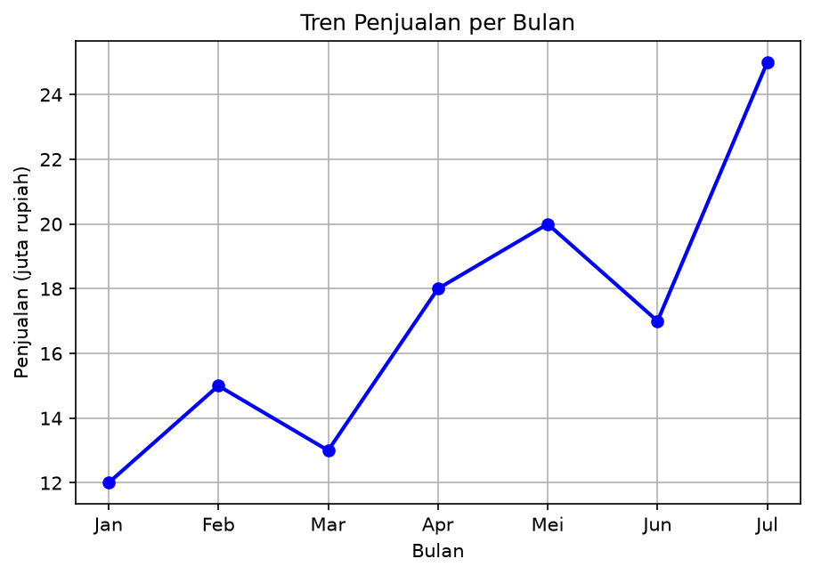
3.2 Bar Chart: Rata-rata UAS Berdasarkan Gender
File proyek: 3_2_diagram_batang.py
rata_per_jk = df.groupby("JK")["UAS"].mean()
plt.figure(figsize=(6, 4.5))
plt.bar(rata_per_jk.index, rata_per_jk.values, color=["skyblue", "salmon"], edgecolor="black")
plt.title("Rata-rata UAS Berdasarkan Jenis Kelamin")
plt.xlabel("Jenis Kelamin")
plt.ylabel("Rata-rata UAS")
plt.savefig("3_2_bar_chart.png", dpi=150, bbox_inches="tight")
plt.show()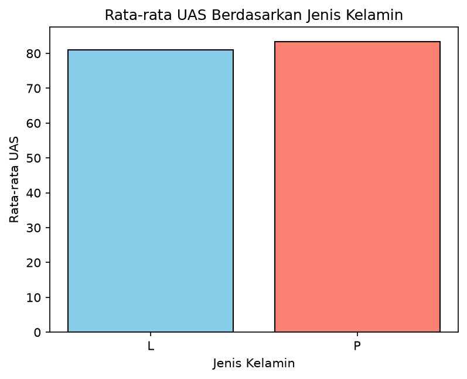
3.3 Histogram: Sebaran Nilai UTS
File proyek: 3_3_histogram.py
plt.figure(figsize=(7, 4.5))
plt.hist(df["UTS"], bins=5, color="green", edgecolor="black")
plt.title("Distribusi Nilai UTS")
plt.xlabel("Nilai UTS")
plt.ylabel("Frekuensi")
plt.grid(axis="y", linestyle="--", alpha=0.7)
plt.savefig("3_3_histogram.png", dpi=150, bbox_inches="tight")
plt.show()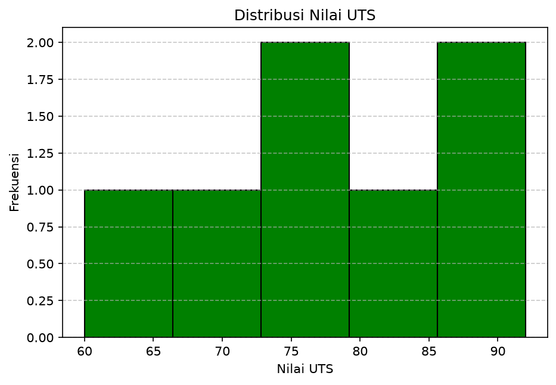
bins=5 membagi nilai menjadi 5 interval rentang. Balok hijau tertinggi berada di rentang nilai 75–90, menandakan mayoritas mahasiswa kelas berada pada kelompok nilai menengah ke atas.
3.4 Scatter Plot: Hubungan Nilai UTS dan UAS
File proyek: 3_4_scatter_plot.py
plt.figure(figsize=(6.5, 4.5))
plt.scatter(df["UTS"], df["UAS"], color="purple", s=70, edgecolors="black")
plt.title("Hubungan Nilai UTS dan UAS")
plt.xlabel("Nilai UTS")
plt.ylabel("Nilai UAS")
plt.grid(True, linestyle="--", alpha=0.7)
plt.savefig("3_4_scatter_plot.png", dpi=150, bbox_inches="tight")
plt.show()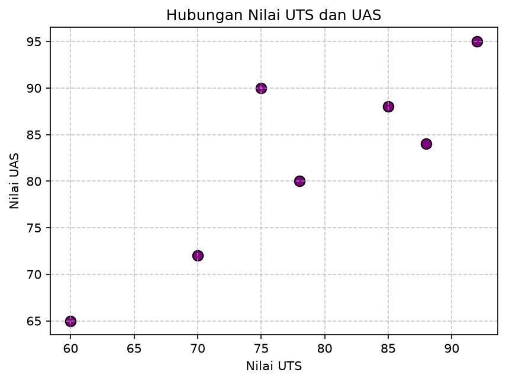
3.5 Boxplot: Deteksi Sebaran & Outlier Nilai UAS
File proyek: 3_5_boxplot.py
import seaborn as sns
plt.figure(figsize=(6, 4.5))
sns.boxplot(y=df["UAS"], color="orange")
plt.title("Boxplot Nilai UAS")
plt.ylabel("Nilai UAS")
plt.grid(axis="y", linestyle="--", alpha=0.7)
plt.savefig("3_5_boxplot.png", dpi=150, bbox_inches="tight")
plt.show()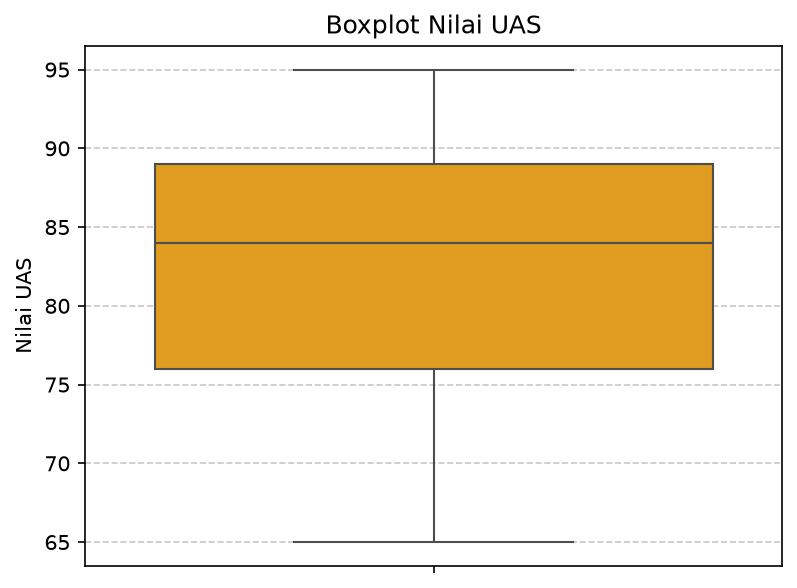
3.6 Pie Chart: Proporsi Jenis Kelamin
File proyek: 3_6_pie_chart.py
komposisi = df["JK"].value_counts()
plt.figure(figsize=(5.5, 5.5))
plt.pie(
komposisi.values,
labels=komposisi.index,
autopct="%1.1f%%",
startangle=90,
colors=["skyblue", "salmon"],
wedgeprops={"edgecolor": "black", "linewidth": 1}
)
plt.title("Komposisi Jenis Kelamin Mahasiswa")
plt.savefig("3_6_pie_chart.png", dpi=150, bbox_inches="tight")
plt.show()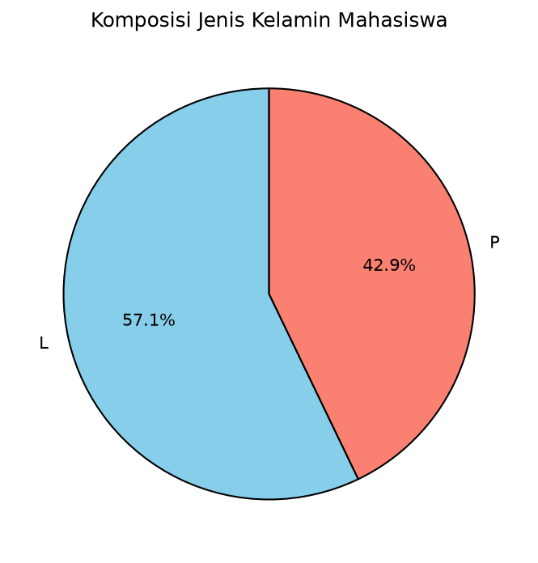
3.7 Heatmap Korelasi Warna Pintar
File proyek: 3_7_heatmap_korelasi.py
plt.figure(figsize=(5.5, 4.5))
sns.heatmap(
df[["Usia", "UTS", "UAS"]].corr(),
annot=True,
cmap="coolwarm",
fmt=".2f",
square=True,
linewidths=0.5
)
plt.title("Heatmap Korelasi Antar Variabel")
plt.savefig("3_7_heatmap.png", dpi=150, bbox_inches="tight")
plt.show()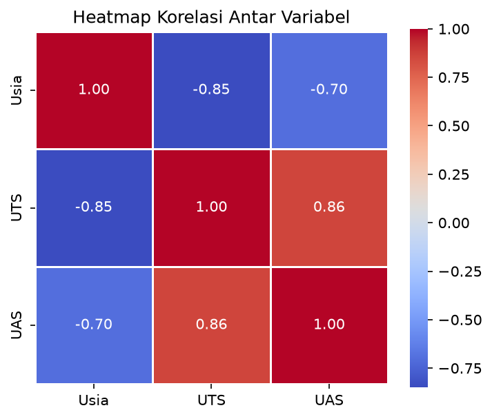
3.8 Menyimpan Hasil Visualisasi (DPI 150)
File proyek: 3_8_menyimpan_gambar.py
plt.figure(figsize=(8, 5))
plt.hist(df["UAS"], bins=5, color="teal", edgecolor="black")
plt.title("Distribusi Nilai UAS")
plt.xlabel("Nilai UAS")
plt.ylabel("Frekuensi")
plt.grid(axis="y", linestyle="--", alpha=0.7)
# Simpan ke file gambar
plt.savefig("histogram_uas.png", dpi=150, bbox_inches="tight")
plt.show()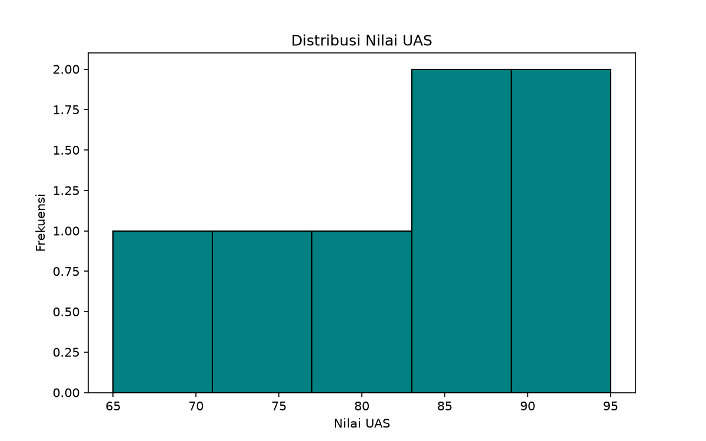
📝 Bedah Tugas Praktikum (Data 10 Mahasiswa)
Berikut adalah implementasi penuh dari proyek studi kasus 10 mahasiswa di file tugas_praktikum1.py beserta 5 gambar visualisasi yang dihasilkan:
import pandas as pd
import numpy as np
import matplotlib.pyplot as plt
import seaborn as sns
data_tugas = {
"Nama": ["Andi", "Budi", "Citra", "Dewi", "Eko", "Fajar", "Gita", "Hadi", "Indah", "Joko"],
"JK": ["L", "L", "P", "P", "L", "L", "P", "L", "P", "L"],
"Usia": [19, 20, 18, 21, 20, 19, 20, 22, 19, 21],
"UTS": [78, 85, 92, 60, 70, 88, 75, 82, 90, 65],
"UAS": [80, 88, 95, 65, 72, 84, 90, 85, 92, 70],
"Absensi": [85, 90, 95, 70, 75, 90, 85, 88, 95, 72]
}
df_tugas = pd.DataFrame(data_tugas)
print(df_tugas.describe())
# Uji Korelasi Absensi vs UAS:
korelasi = df_tugas["Absensi"].corr(df_tugas["UAS"])
print(f"Korelasi Absensi & UAS: {korelasi:.4f}") # Output: 0.95191. Histogram Nilai UTS
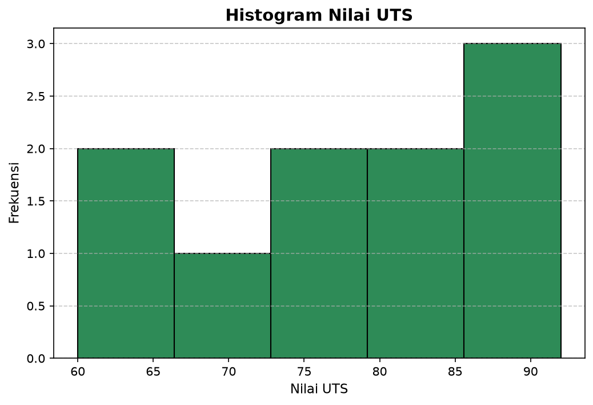
2. Boxplot Nilai UAS
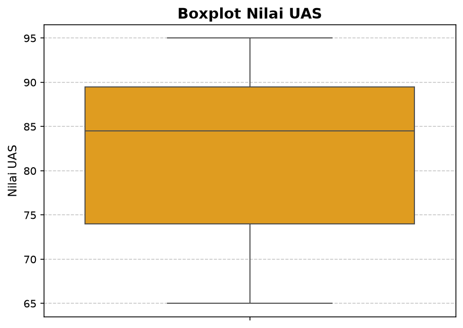
3. Scatter Plot: Hubungan Nilai UTS vs UAS
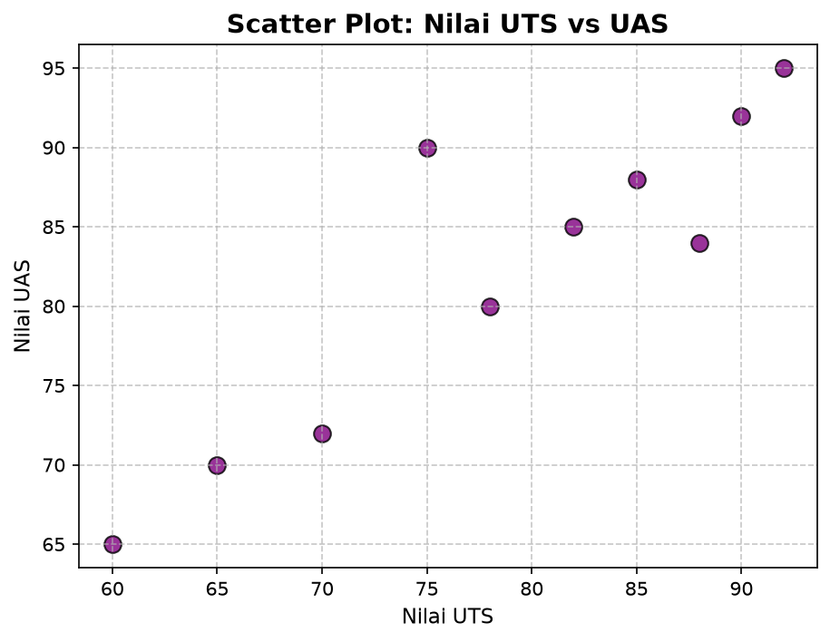
4. Bar Chart: Rata-rata UAS Berdasarkan Gender
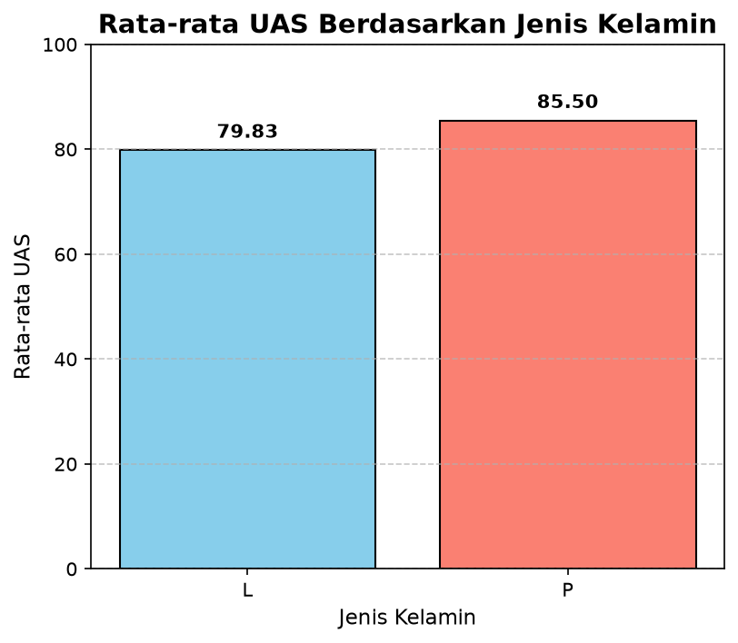
5. Heatmap Korelasi Seluruh Kolom Numerik
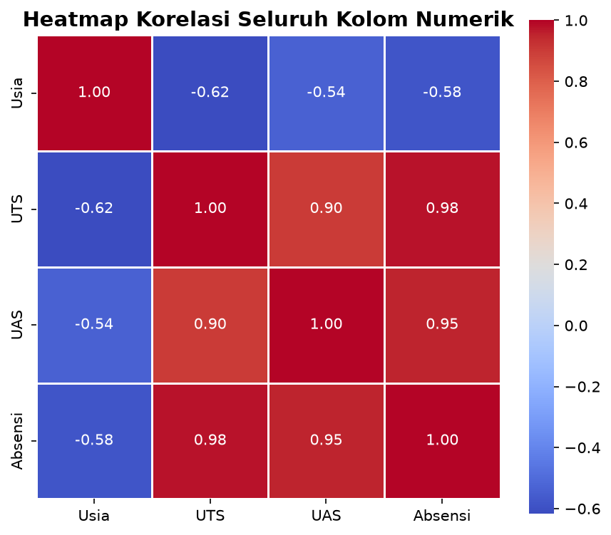
⏱️ Strategi Mengajar Efektif 50 Menit
praktikum1.ipynb, ajak mereka menjalankan sel, mengganti nilai parameter, dan mendiskusikan outputnya.
- 00–05 mnt: The Hook: Kisah sukses Data Mining (popok & kopi).
- 05–15 mnt: Rontgen data dengan
info()dandescribe(). - 15–30 mnt: Konsep Sultan Warkop (Mean vs Median) & Korelasi.
- 30–45 mnt: Tunjukkan 3 grafik visual (Histogram, Boxplot, Heatmap).
- 45–50 mnt: Penugasan mandiri ekspor 5 grafik di
tugas_praktikum1.py.
🚨 Kamus Error Mahasiswa
pip install matplotlib seaborn pandas numpy
"UTS", bukan "uts".
plt.show().